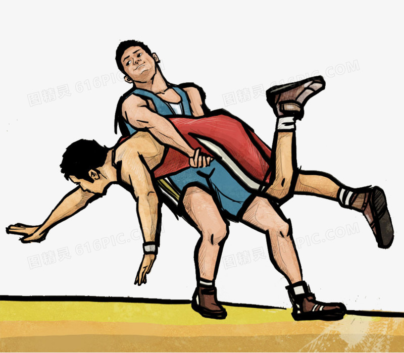

角力是重競技運動項目之一，是一古老的競技項目，兩人徒手相搏，按一定的規則，以各種技術、技巧和方法摔倒對手。 世界各國都有其民族特點的角力形式和方法：中國的角力、蒙古的角力、俄國的桑搏、日本的柔道和相撲，以及希羅式角力、自由式角力等均屬角力範疇，都有自己形式的摔法和比賽規則。希臘、中國、日本以及埃及等國家的古代文獻中就有相關的文字記載。 角力在公元前 708 年的古代奧運會上就已經是比賽項目了，目前國際式角力比賽形式有希羅式和自由式兩種，比賽時按體重分級進行。希羅式角力在 1896 年首屆現代奧運會就被列為比賽項目，自由式角力則是在 1904 年正式被列為奧運會比賽項目。角力初成為現代奧運項目時，沒有體重分級和限制。於 1900 年的第二屆奧運取消， 4 年後重新加入，並加入了自由式角力直到現在。在 2004 年夏季奧林匹克運動會，新增了女子項目。 2013 年 2 月 12 日國際奧會執行委員會投票決定角力被剔除出必辦項目中，必須與 7 項運動競爭成為 2020 年夏季奧林匹克運動會的比賽項目。
